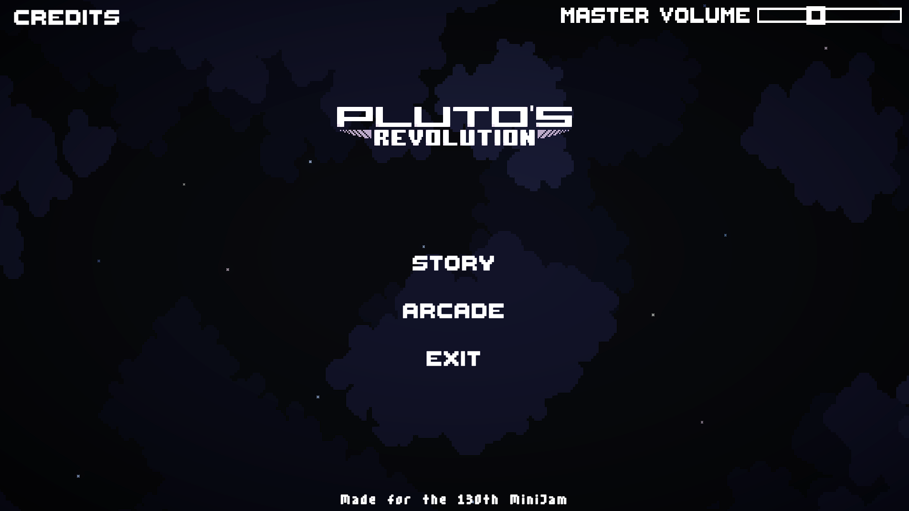

Pluto's Revolution
Following a very satisfying and fulfilling first game we decided to participate to another Jam, and work on improving upon the faults of our first game. While the overall results were not as high as Z.I.P's, we are absolutely sure that it was a much more successful project than our last. It was well within the scope we had set for it, much more polished and cleaner-looking, and as free of bugs as we managed to make it.
In this project my responsibilities weighed more heavily on the Game Design: I came up with the idea and concept behind the game, as well as hand-crafting all 5 levels for the Story mode and over 20 Obstacle Presets for the Arcade mode. I also had a very impactful role with my Programming, doing about 1/3rd of the total coding, including making the Player Controller, creating the first prototype and implementing various obstacles.